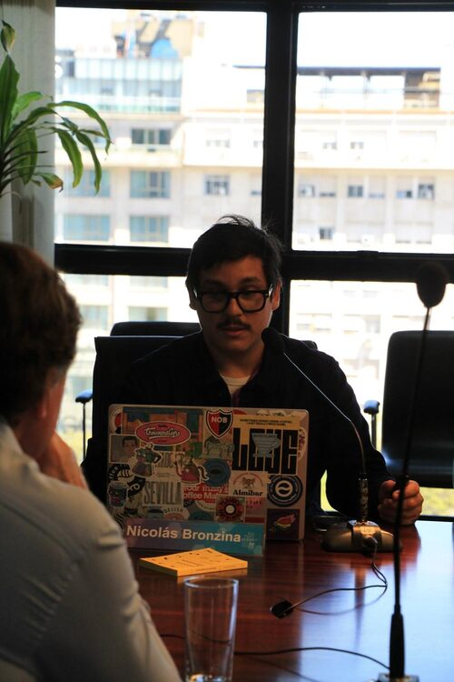

Your organization navigates uncertain futures. I create AI-enhanced prototypes that transform research into strategic decisions you can act on.
Publisher of MARGIN.SIGNALS—bringing you early signals from cultural margins before they become mainstream trends.
Through Heated Studio, I help organizations build climate resilience strategies. At BPP Analytics & Design, I combine research with futures design to support your strategic decisions. I facilitate workshops that equip design teams with AI-enhanced foresight methods.
Delivered design fiction projects for global clients in telecommunications, finance, defense, and mobility—turning sector uncertainties into tangible strategic tools.
Ready to explore futures that don't exist yet? I create design fiction prototypes, strategic foresight frameworks, and facilitated workshops that prepare your team for what's next. Start the conversation.
Work

Environmental Crisis

Foresight

- No, the plane doesn't have AI. And that opens up more interesting questions than the ones it tries to answer
- What if the State Designed Futures? A day in Buenos Aires revealed how speculative design, weak signals, and institutional fiction can become fundamental tools for public policy
- Teaching Artificial Intelligence to UX Designers: Notes from a masterclass given together with Fabien Girardin and Rohit Gupta for UX design students at UDIT [ES]
- Turning the Tide: How Argentina Can Transform Short-Term Survival into a Future-Ready Strategy
- Comment réimaginer le futur au quotidian? / Re-imagining everyday futures
- Viveza Criolla: A Design Fiction Lens on Strategic Adaptation
- A practical guide to changing how you see the everyday objects and spaces around you
- Prospective Methodology Based on Futures Design
- How to prepare for and anticipate contingencies by proposing narratives and artifacts through Futures Design
Publishing
MARGIN.SIGNALS

Independent editorial bringing you weak signals from cultural margins—before they reshape your industry.
Release 001: SPECIALTY.COFFEE.MARGINS
What happens when coffee's margins challenge its center? This trendspotting fanzine explores master plant protocols, intentional defect fermentation, and decolonised cupping—patterns of hierarchy inversion you'll see elsewhere soon.
Limited prototype run. Access by direct request only.
Formats & pricing
Digital edition – €15
Physical edition (limited print) – €35
Dual bundle (digital + print) – €45
Acquire your copy via direct request.
Follow @margin.signals for updates and future releases.
Projects
Desert Athleisure
What does sportswear look like in 40°C+ futures? This Heated Studio design fiction helps retailers and brands prepare for extreme heat scenarios through tangible product prototypes. Landing page.
View →Adaptive Museums
How can cultural institutions become climate refuges? This Heated Studio prototype explores dynamic pricing models that help museums adapt to climate crisis while serving their communities. Video introduction.
View →Mercado San Telmo
How does a historic market survive climate change? This design fiction explores adaptation strategies for Buenos Aires' San Telmo market facing urban and environmental pressures. Video introduction.
View →Cuidados en Red
How can cities care for aging populations? This design fiction reimagines Buenos Aires' eldercare system for changing demographics and emerging technologies realities.
View →OFFicial
How should governments welcome climate refugees? This design fiction explores institutional frameworks for large-scale migration in a near future Spain.
View →Also
playground mk-air
Experience live audio that exists only in the moment—no recording, no archive. Broadcasts that challenge your relationship with permanence and presence.
View →CV
Experience
Lab de Mundanidad Forzada
Research Coordinator & Lab Initiator
Coordinate collaborative experiments that help teams understand forced mundanity through ethnographic methods and design interventions—creating research frameworks you can apply to your own contexts.
Heated Studio
Co-founder & Design Fiction Lead
Prepare your organization for climate futures through design fiction prototypes and strategic foresight—turning abstract climate risks into tangible strategies your team can test.
BPP Analytics and Design
Managing Partner
Your organization needs intelligence that anticipates change. We combine sociological research with futures design to transform uncertainty into strategic clarity and actionable insights.
Girardin & Nova
Design Researcher
Delivered design fiction projects that helped global telecoms, financial services, and defense organizations navigate sector transformation—methods now documented in published frameworks you can apply.
Near Future Laboratory
Design Researcher
Explored emerging tech futures for mobility sectors through design fiction—creating prototypes that helped organizations anticipate societal transformation before it arrived.
Teaching
UDIT Madrid
Guest Lecturer, Master's in UX Design
Equipped UX designers with AI-enhanced design fiction methods through intensive masterclass with Fabien Girardin and Rohit Gupta—giving students practical tools to anticipate emerging technology impacts in their work.
Domus Academy, Milan
Guest Workshop Co-facilitator
Guided design students to develop speculative urban futures for extreme heat scenarios—teaching weak signals analysis and climate foresight methods they can apply throughout their careers.
CESBA, Buenos Aires
Event Organizer & Opening Keynote
Presented frameworks for integrating futures design into public policy—proposing a Futures Anticipation Unit that helps government navigate uncertainty through institutional design fiction.
Education
UDIT Madrid
Master's Degree in User Experience for the Design of Digital Products and Services
Universidad del Salvador
Bachelor's in Sociology
Institute for the Future
Certified in Future Thinking & Forecasting
Core Expertise
I help organizations prepare for uncertain futures through design fiction and AI-enhanced prototyping. My methods—weak signals analysis, scenario planning, ethnographic research—transform abstract risks into tangible strategies for climate adaptation, urban resilience, and societal change.